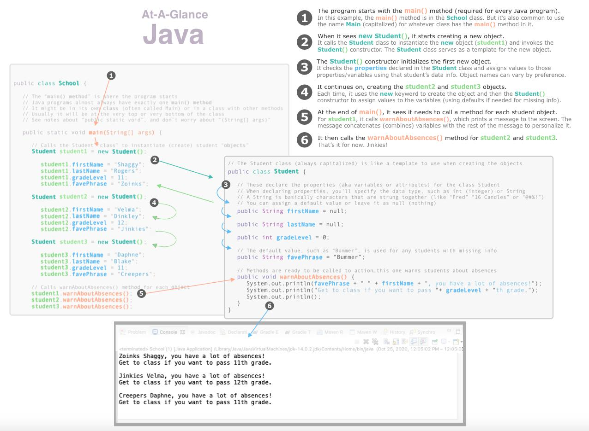

Here's a bird's eye view of what happens in a simple Java program.

You've probably read that Java is an object-oriented programming language. But what does that mean? First, let's look at what an object is. In the diagram above, the Student class is used as a template to create three student objects. Each object has four properties and one method...all of which can be accessed from anywhere in the program.
For a different example, let's say you take your car to get repaired. The mechanic enters your vehicle information into the system by filling in various fields (year, make, model, color, license plate, etc.). In other words, a Vehicle class constructor was used to create an object for your car with the various properties and methods. This object represents your specific car and carries with it all the relevent properties and available methods that might be needed at some point. (Which properties and methods can be accessed from which places in the program depends on their scope, described further below.)
Here are four key principles of object-oriented programming. The examples are just intended to get across the main concepts.
To make code abstract means to make it more generic so it can potentially be re-used for other things. In the vehicle example, if I had started off by creating a Car class, then I would be stuck creating a whole other class for trucks and then another one for motorcycles. Initially, I might not mind copying/pasting all that code, but I'd have to do this every single time I made a change. And if I forgot, I'd have bugs. By abstracting the Cars class to a more generic Vehicles class, I don't have to create (and maintain) entirely separate classes...with ALL their properties and methods. I can just create one class...although I might want to create a vehicleType property and possibly some subclasses where I can make adjustments, described further below).
The main benefits of abstraction is that it makes code more re-usable, which reduces a lot of copying/pasting and, more importantly, the amount of time needed to maintain code over the course of its lifetime.
Another way to improve re-usability is to create subclasses that extend the parent class (base class). This lets you inherit the desired properties and methods and then add additional ones that are specific to the subclass. For example, I could extend my class for vehicles (mainly used for cars, SUVs, and light trucks) by creating a subclass for motorcycles and a subclass for semi trucks. Or I could have a Vehicles parent class with subclasses based on engine type: electric, hybrid, or internal combustion. It all depends on what's most useful for your specific program.
Like abstraction, inheritance allows you to reduce repetition, which makes code much more maintainable.
When a subclass inherits from the parent class, we might need to change how some of the properties and methods work. So, for example, if we extend the Vehicles class by adding an ElectricVehicles subclass, we'd probably need to change how some properties work, like fuelType. And some of our methods might need to work in a different way.
Polymorphism is having the flexibility to incorporate special handling (by overriding or overloading properties, etc.). This makes it possible to reuse code and still have it meet your needs.
Remember, objects carry their information with them. It's kind of like a pet having a dog-tag, but with much more data, such as breed, markings, nicknames, and favorite treats. It might have information about current status (such as "wearing a cone" or "sniffing another dog") as well as information on how to do things, such as eating from the dog dish.
But let's say you don't want ALL the information and capabilities to ALWAYS be available throughout the program. For example, let's say we have a method somewhere else in the program in the Family class, and in the Family class we have a method called drawFamilyPortrait(). Whereas we DO want that method to be able to access our Pets class for general information, we probably DON'T want that method to draw our dog in its current status (sniffing another dog). And we may want our dog's ability to eat from dog dishes to only happen in when it's HIS dog dish and NOT in situations where it would be another dog's dish instead.
This is where encapsulation comes into play. Since we're using inheritance and abstraction to be able to re-use code in various parts of the program, we also need to be able to control the scope. So if properties shouldn't be accessible from other classes (such as if they only make sense in certain contexts), you need to be able to set the scope to limit the accessibility for your classes, methods, and properties. This is done with access modifiers: public, private, package (default), and protected. Read below if you'd like more detail.
When first looking at Java code, you've probably wondered about the keywords public , static, and void. Understandably, most Java tutorials kind of skip over that and follow the traditional sequence of explaining programming (after the usual "Hello world," do some basic math computations, then explain variables and data types, and proceed to logic and conditionals). However, for anyone who wants a general idea of what they mean, here are some brief explanations.
| Access modifiers ("public," "private," etc.)
(Defines the scope of a class, method, or variable by letting you control where it can be accessed) |
|
|---|---|
public |
For classes, methods, and properties/variables that can be accessed from anywhere in the program. |
private |
For classes, methods, and properties/variables that can only be accessed from the given class. |
package |
For classes, methods, and properties/variables that can be accessed from within the classes in the same package. This is the default behavior when the access modifier is not specified. |
protected |
For classes, methods, and properties/variables that can only be accessed from the given class and its subclasses. |
| The "static" keyword | |
static |
The "static" keyword is for methods or properties/variables that belong to the class in general rather than to a particular instance of the class. So it is usually only used for methods where objects aren't created. |
| The "void" keyword | |
void |
For methods that don't have a return value. |